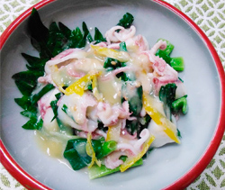

イカとワケギの柚子みそ和え
- 調理時間：20 分
- （一人当たり）
- カロリー：130kcal
- たんぱく質：14.2g
- 脂質：3.2g
- 炭水化物：12.5g
- 塩分：1.3g


＜2人分＞
- 小イカ（ヒイカ）
- 150g
- ワケギ
- 150g
- ・白みそ
- 大さじ1
- ・白ごま
（切りごまにする） - 小さじ2
- ・砂糖
- 小さじ1
- ・柚子果汁
- 大さじ1
- ・しょうゆ
- 少々
A


- コイカの背骨を抜き、目を取り除く。
- 鍋に湯を沸かし、ワケギの根元の白い部分から先にいれてゆでる。
白い部分がくたっとしたら全体を落として、サッとゆでる。
茹で上がったワケギは水に浸けず、ザルにあげ、そのまま冷ます。
（うちわなどで仰いで冷ますとより良い） - 残った湯を再沸騰させ、①のコイカをサッとゆで、こちらは冷水で直ぐに冷やす。
- ②のワケギを４～５㎝幅に切る。
- Aの調味料をボウルに合わせ、食べる直前にコイカとワケギと和えて完成。
イカとワケギの柚子みそ和え
冬至に柚子湯に入るとその冬の間、風邪をひかずに過ごせると言われてきました。
青柚子の旬は夏ですが、完熟した黄柚子の旬は冬になります。黄柚子は香りが抜群に良く、ほんのりとした甘みが特徴です。柚子の香り成分であるリモネンには神経の興奮を鎮め、リラックス効果があるので、寒くてギュッと縮こまった身体によい影響を与えてくれます。慌ただしい師走の日々はセルフケアが肝心です。身体と心をととのえ新年を迎えましょう。